July 2025
Bishwo Nath and Nanda Kumari Adhikary Endowment Scholarship
Awarded the scholarship by Kathmandu University's School of Engineering, selected based on academic performance and an interview.
See the announcement
See the announcement
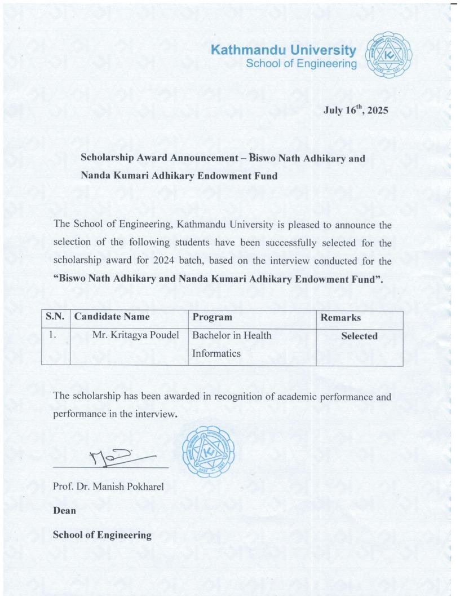
2025
Telemedicine field visit, Rasuwa
Went to Rasuwa with the Telemedicine Society of Nepal to see telemedicine services in practice as part of the first batch of the Bachelor's program.
See the post
See the post
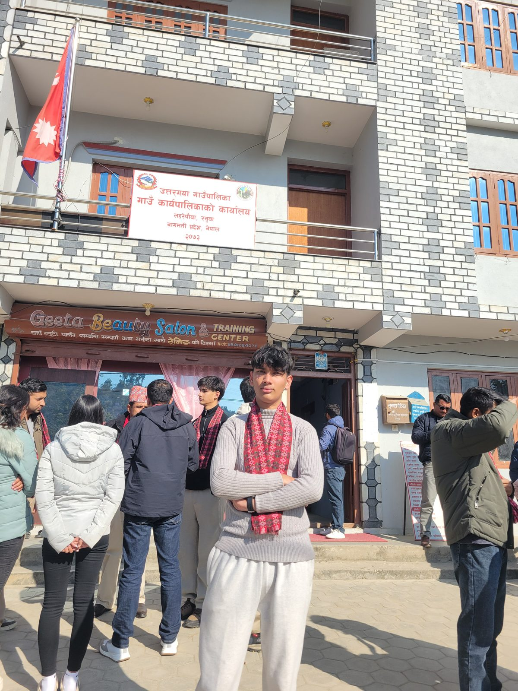
May 2026
ICTP Workshop on Delay-Tolerant Networks
Selected with two peers for a 5-day UNESCO-affiliated ICTP workshop on DTN solutions for environmental monitoring. Worked hands-on with Raspberry Pi networking, ION DTN software, and IoT sensor systems, including the Trishuli River sensor network. We also got to learn from researchers and Nepali innovator Mahabir Pun.
Read the KU writeup
Read the KU writeup
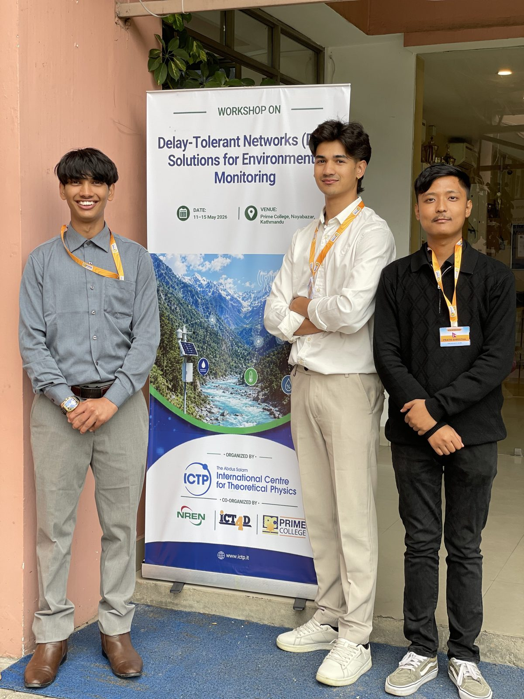
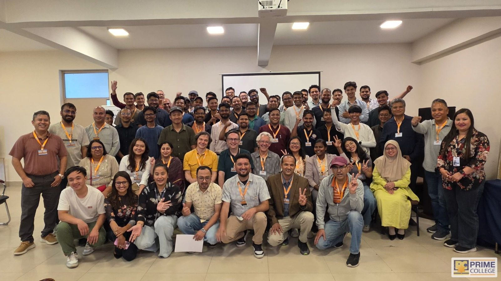
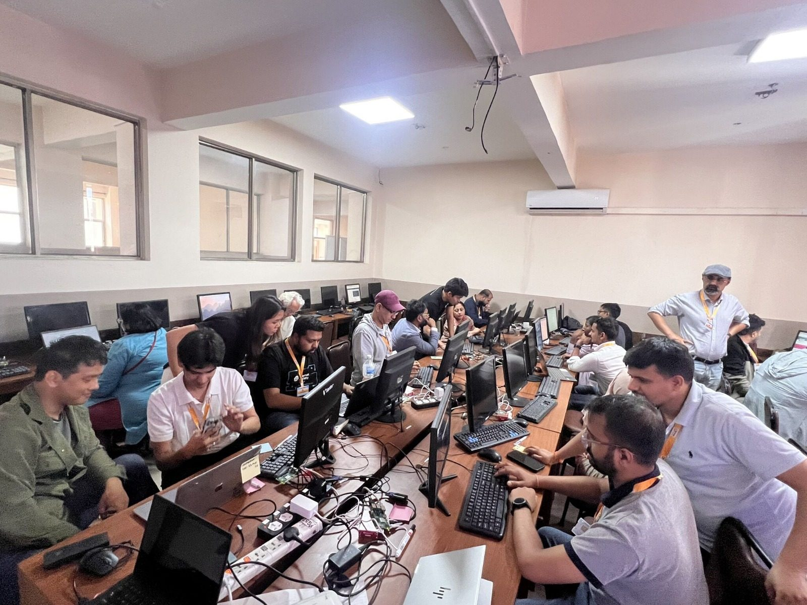
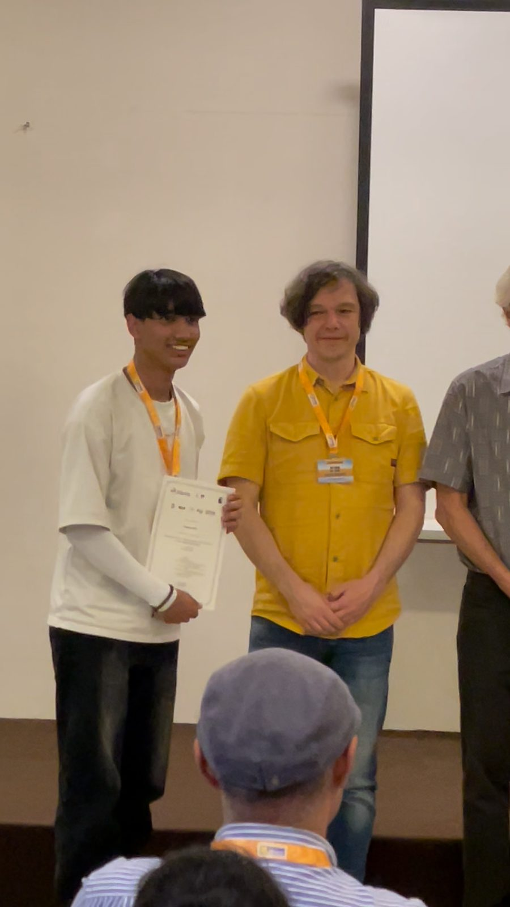
May 2026
Volunteer, 19th IFIP WG 9.4 Conference
Volunteered at the 19th IFIP Working Group 9.4 Conference, "Reorienting the Digital Ethics Ontology for a Sustainable Future," hosted at Kathmandu University, May 25–27.
Conference post
Conference post
Dec 17, 2025
STEAM Material Competition, Ministry of Education, Science and Technology
Presented at the STEAM Material Competition organized by Nepal's Ministry of Education, Science and Technology. Didn't secure the grant this time, but it was a good experience presenting an idea in front of a panel.
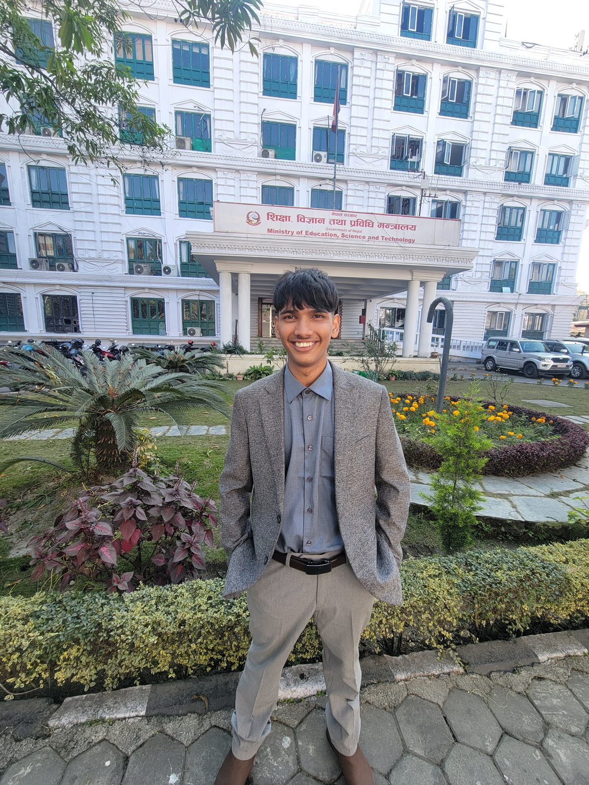
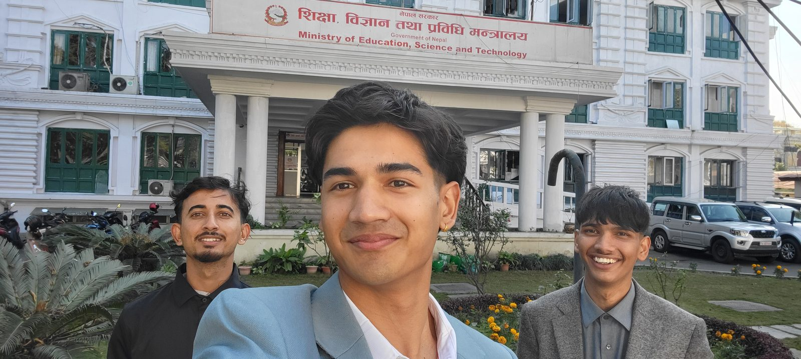
In progress
Research paper
Currently working on a research paper. Details to be added once it's further along.
Ongoing
Academic performance
Class topper with a 4.0 GPA across three semesters of the Health Informatics program.
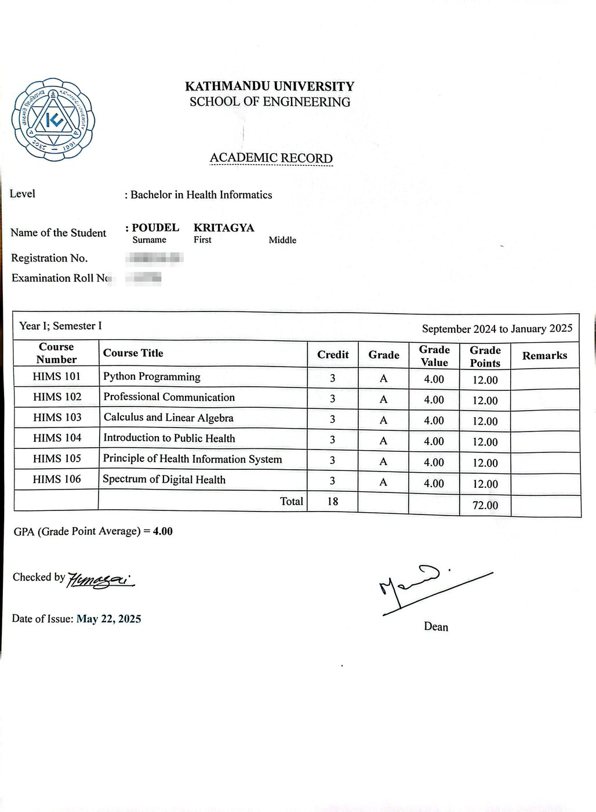
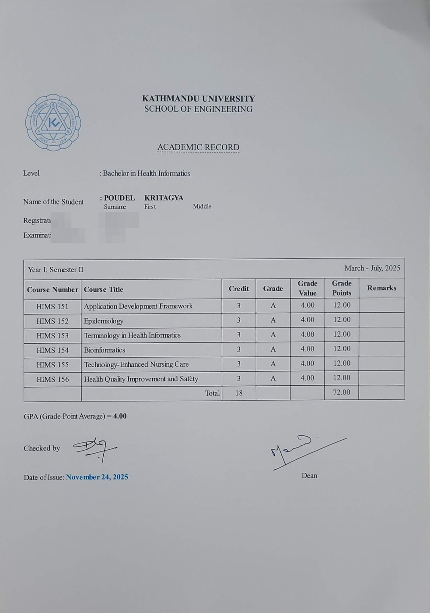
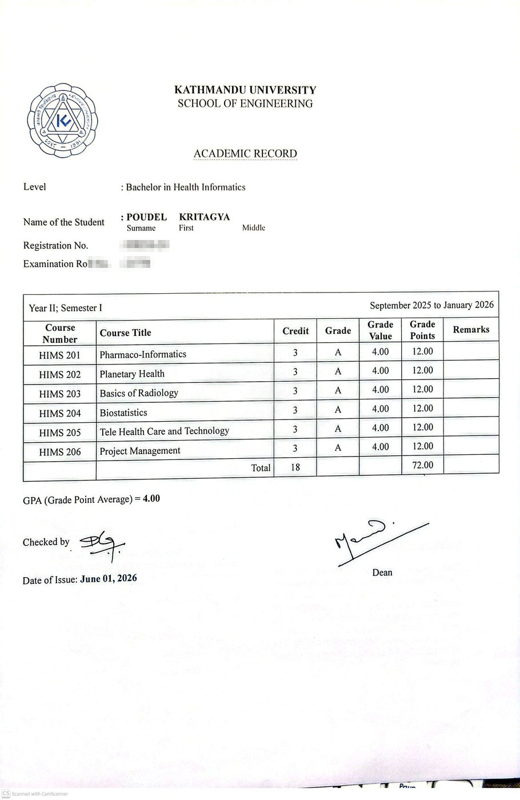